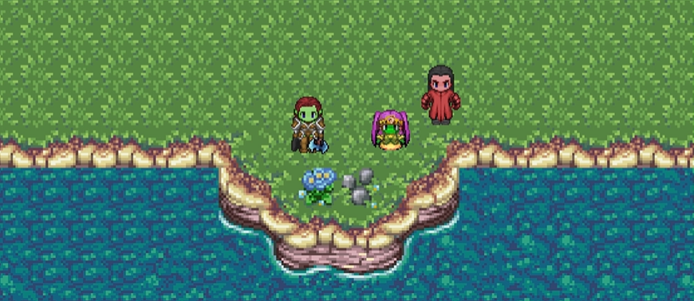

Grashka
My name is Jaqueline, and I graduated with a degree in Computer Science. I enjoy solving complex problems and taking on challenges that push me to think critically and creatively.
What motivates me that most is the ability to build something from the ground up and see it come together into a finished product. I enjoy the full process, from learning new concepts to applying them in real projects, and I am always working to expand my skills.
I have worked on a variety of projects using technologies such as JavaScript, HTML, CSS, C/C++, and Unity. This range of experience has allowed me to explore different areas of development and become more adaptable when approaching new problems.
Beyond coding, I enjoy games, puzzles, reading, and art. I also like working hands-on with electronics, which has helped me develop a practical problem-solving mindset that carries over into my development work. I often bring both technical and creative elements together to build engaging and meaningful experiences.